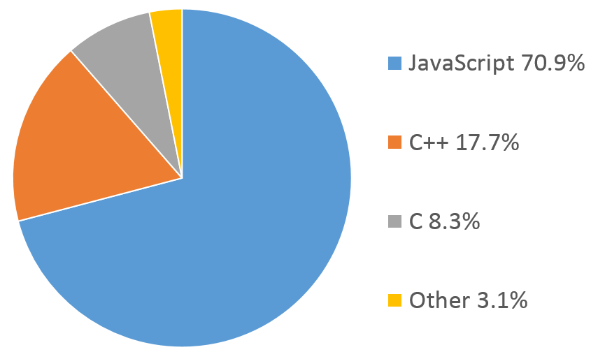
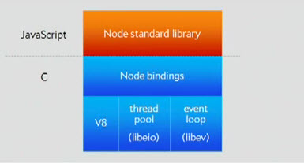
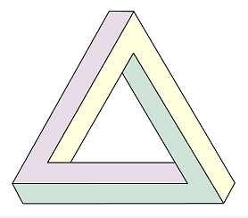
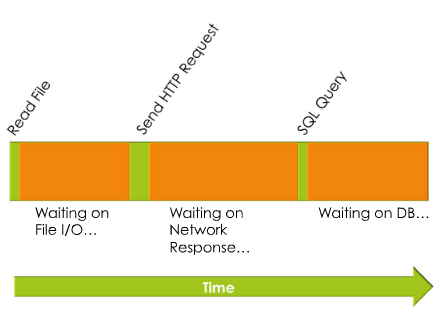
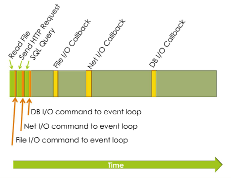

Yay JavaScript!
This is the most exciting time to be a JavaScript developer, and it is only going to get better.
Due to the advent of HTML5, the abandonment of Flash, the poliferation of mobile devices, and most certainly because of Node.js, JavaScript is becoming the language of choice today and unquestionably for the near future.What is Node.js
-
From the Website
- Node.js is a platform built on Chrome's JavaScript runtime for easily building fast, scalable network applications. Node.js uses an event-driven, non-blocking I/O model that makes it lightweight and efficient, perfect for data-intensive real-time applications that run across distributed devices.
-
Actual Description
Under the hood
Node.js is made up of
- Google's V8 JavaScript engine
- The platform abstraction layer
- The Node core library
Node.js itself is open source and on GitHub

Under the hood
The majority of Node.js is actualy written in JavaScript and the abstraction layer mostly in C and C++
How does it work
Node.js runs JavaScript by leveraging V8, Google’s fast JavaScript engine designed for Chrome.
This allows Node.js to create a runtime environment that translates JavaScript into native machine language, instead of working overtime to interpret it as bytecode, giving Node.js its speed.
In a nutshell the Node.js environment provides a JavaScript interaction layer to underlying systems calls.
Speed and Scalability
- Q: What to webservers do?
- A: I/O
- Q: What is realy slow?
- A: I/O
- Q: What blocks the thread?
- A: I/O
- Q: What happens when you add more threads?
- A: Problems more of you have.

Event loop
Node.js, uses an event loop instead of threads JavaScript is extremely well suited to event-based programming because it has anonymous functions and closures, and JavaScript developers already know how to program in this way.
This event-based model makes Node.js very fast, and able to scale to millions of concurrent connections very easy.
Sync
Node takes advantage of the fact that usualy, servers spend most of their time waiting for I/O.
For Example: Traditional approach
Async
Every I/O operation in Node.js is (can be) asynchronous, meaning that the server can continue to process other things while the I/O operations, like reading a file from a hard drive, accessing an external web service or querying a database, are completed.
For Example: No blocking approach
I/O DEMO
Modules
Node.js uses a module architecture to simplify the creation of complex applications.
Modules are encapsulated pieces of code akin to libraries or classes. Each module contains a set of functions related to the subject of the module. For example, the http module contains functions specific to HTTP.
Modules
Node.js provides a few core modules out of the box to help you access files on the file system, create HTTP and TCP/UDP servers, and perform other useful functions.
To include a precomposed module the require() function is used as such:
var http = require('http');
Modules
In the previous code, we passed the name of a module to the require() function. This causes Node to search for a node_modules folder in our application’s directory, and search for the http module in that folder.
If Node does not find the node_modules folder (or the http module within it), it then looks through the global module cache.
You can also specify an actual file by passing a relative or absolute path, like so:
var myModule = require('./myModule.js');
NPM
NPM (Node Package Manager). Is the default package manager and is automatically installed with Node.js.
To install a module, open your terminal/command line, navigate to the desired folder, and execute the following command:
npm install module_name
It doesn’t matter what OS you have the above command will install the module you specify.

Webserver DEMO
Usage
Node.js is the immediate and near future of modern web application development with JavaScript as the sole server-side language.
While Node.js, is predominantly thought of in relation to web, it is however also very good for creating command line tooling that will work accross multiple platforms. (Windows, Linux and OSX)
Combine this with the power of npm and you have a cross platform package manager to install cross platform tooling!